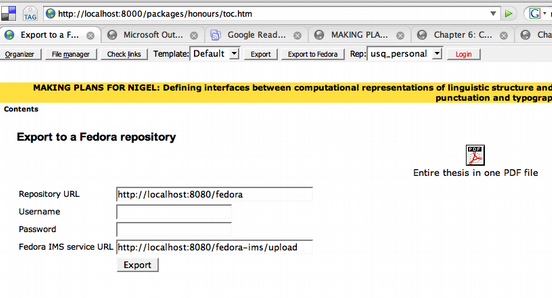
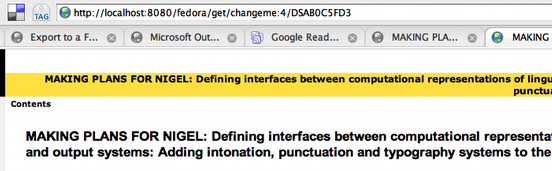

Putting web content into a Fedora repository via IMS packages
2007-01-22
USQ now hosts another DEST-funded project operating in the same space as RUBRIC: FRED. That's Federated REpositories for EDucation. No that would be FREED.
Oliver Lucido, a developer I've worked with before has joined the FRED team and started immersing himself in the world of repositories and the e-Framework.
To get him started on the immersion process I asked Oliver to knock out a bit of code to put IMS content packages into a Fedora repository, via ICE. IMS packages are for exchanging courseware, but also turn out to be pretty handy for things like large sets of meeting papers, and packaging theses for web consumption.
Oliver wrote a bit of proof-of-concept code, which I'm sure will be made available by the FRED project under an appropriate license.
It works so well that there's actually nothing to see!
Here's the thesis on my web server so you can see what it looks like. This is a work in progress – it is currently missing some emphasis styles and needs a bit of a general tidy up. There are a couple of images, copyright someone else, missing too – not sure what I'm going to do about that yet. And the USQ logo will have to go! Or will it? If you are coming in later this may all be fixed up.
Here's a screenshot from the ICE application, showing the crude form for export to Fedora. The Fedora address is pre-populated by the code, so all you have to add is a user name and password. Obviously in a real system that could be hidden too, ICE should be able to identify you to Fedora, which can work out whether to authorize the deposit.

And here's a screenshot of the address bar, showing the thesis being
served from Fedora on the mac. See how the URL for a page is
fedora/get/ followed by the ID of the object that contains all the
parts, followed by a datastream ID, which is generated from the item's
location in the package run through a hash function to make a usable
Fedora ID.
The approach we took here was to break the code down into two parts.
There is a generic package uploader on the Fedora side and a custom
button, Export to Fedora on the ICE side.

Using Java to smash up an IMS package (it's just a fancy zip file) and the SOAP interface to put stuff into Fedora proved easy for Oliver; the basic code was a matter of a few hours. Getting it to work with the version of Fedora I have running with VITAL on my virtual test machine, downgrading it to Java 1.4, and figuring out where to put the .war files has added a few hours to that. Seemed easy, but deployment got tricky. We eventually gave up and just went with Fedora 2.1.2. and Java 1.5. This means that we won't be able to demo the code with VITAL until we have version 3.
I've talked to Nigel Ward of the FRED project about this and it was a conversation starter alright:
-
Oliver pointed out that instead of the current approach of changing the HTML content so that it all points to new Fedora datastreams, you could use a disseminator to munge the content as it is served – more processing for each access but it would preserve the relationships better.
-
This will only work with IMS packages that have their own navigation, it doesn't try to do anything with the table-of-contents-like Organizations that are in the IMS package manifest (see the XML here). Should we look at writing a disseminator that understands Organizations?
-
How about a different model where every single bit of the package is an object, and there is some relationship metadata to tie it all together? It's easy enough to code, but I think would be difficult to manage a repository like that.
-
How would you build this in to a working repository – would the repository frame the content in some way or would it simply show the content as-is, taking over the whole browser?
-
How can we integrate this with repositories that have their own workflows? For example VITAL's web ingest is via a file based bit of code called VALET that doesn't use Fedora until the item finally goes into the repository.